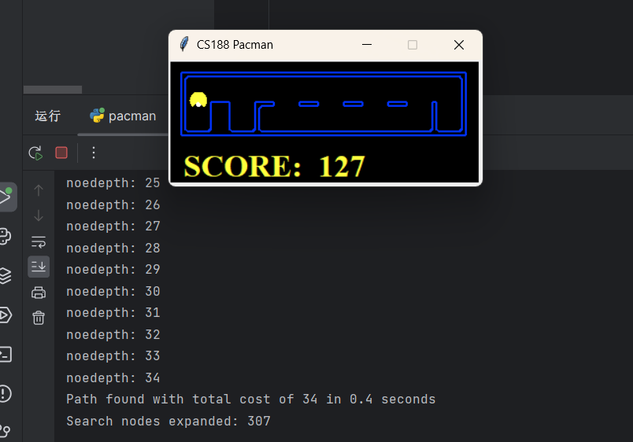
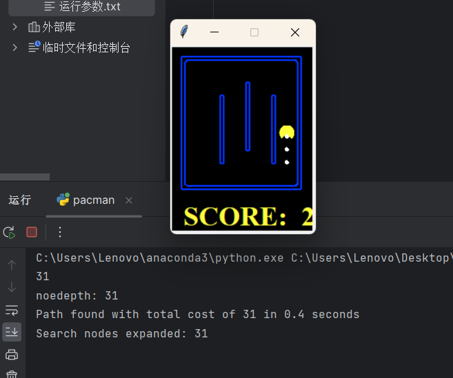

报告题目：Pacman Game 1 引言
在个人过去的实践中，搜索算法是低效暴力的代名词，但是通过本课程的学习，从深度优先宽度优先到代价优先，再到A*算法，我才发现搜索算法的强大之处。优秀的启发式函数可以大大提高搜索效率，搜索算法的强大之处在于其可以解决各式各样的问题，比如本次实验中的pacman游戏，可以通过搜索算法来解决。并在一次次优化算法的过程中，我也对搜索算法有了更深的理解。
2 实验内容
2.1 TASK1 dfs&bfs in Maze Problem
2.1.1 防止走同样的点
和所有的搜索算法一样，如果遇到了重复的点，那么大可不必再走一遍。
于是在后续所有的程序里，我用V i s i t e d N o d e VisitedNode V i s i t e d N o d e
2.1.2 数据结构的选择
在这个实验中，我选择了S t a c k Stack S t a c k Q u e u e Queue Q u e u e
2.1.3 核心代码展示
1 2 3 4 5 6 7 8 9 10 11 12 13 14 15 16 17 18 19 20 21 22 23 **宽度优先搜索** startNode = problem.getStartState() if problem.isGoalState(startNode): return [] Que= util.Queue() VisitedNode = [] Que.push((startNode, [])) while not Que.isEmpty(): Nownode, actions = Que.pop() if (Nownode not in VisitedNode): VisitedNode.append(Nownode) if problem.isGoalState(Nownode): return actions for nextNode, nextAction, cost in problem.getSuccessors(Nownode): newAction = actions + [nextAction] Que.push((nextNode, newAction)) util.raiseNotDefined()
2.1.4 实验结果
我们统一用拓展节点数作为评价指标，下面是实验结果：
问题
深度优先搜索
宽度优先搜索
bigMaze
390
620
这是在正确路径只有一条的时候，如果有多条路径，可想而知其expandnode会大大增加。
2.2 TASK2 A* Search in Maze Problem
2.2.1 设计代价函数
在这个实验中，我选择了曼哈顿距离作为启发式函数，即∣ x 1 − x 2 ∣ + ∣ y 1 − y 2 ∣ |x1-x2|+|y1-y2| ∣ x 1 − x 2 ∣ + ∣ y 1 − y 2 ∣
因为只有一个目标，所以我们的大方向是往( 1 , 1 ) (1,1) ( 1 , 1 ) ∣ x 1 − 1 ∣ + ∣ y 1 − 1 ∣ |x1-1|+|y1-1| ∣ x 1 − 1 ∣ + ∣ y 1 − 1 ∣
(尽管在一些时候，迷宫经过设计，不一定走得通的路径，但是我们的启发式函数能够保证我们的程序能够尽可能的往目标点靠近，而不是南辕北辙乱走。)
1 2 3 def myHeuristic (state, problem=None , Map=None ): (Goal_x, Goal_y) = problem.goal return abs (state[0 ] - Goal_x) + abs (state[1 ] - Goal_y) + Map[state[0 ]][state[1 ]]
2.2.2 一点优化
对于迷宫问题，一个常见的问题是如何避免走进迷宫的死胡同里。在网格迷宫里，死胡同一定有的特征是最终会到一个三面都是墙的情况。
那么显然，如果我们能预处理判断出那些路是死胡同，那么我们就可以在搜索的时候避免走进死胡同。从而节省大量的e x p a n d N o d e expandNode e x p a n d N o d e
所有三面是墙的点都是不必要访问点，其次，如果上下左右有两面墙，且可以走的两个格子里有一个是不必要访问点，那么这个点也是不必要访问点。
具体地，我们在代码里用m a p map m a p
接着我们进行循环，每一次找map值为2的格子，如果其相邻的格子有不可访问点，那么这个格子也是不可访问点。我们一直执行这个循环直到没有新的不可访问点出现。
1 2 3 4 5 6 7 8 9 10 11 12 13 14 15 16 17 18 19 20 21 22 23 24 25 26 27 28 29 30 31 32 33 34 35 36 37 38 39 40 41 42 43 44 def Build_Map_With_Block (problem ): map = [[0 for i in range (problem.walls.height)] for j in range (problem.walls.width)] for i in range (problem.walls.width): for j in range (problem.walls.height): if problem.walls[i][j]: continue for action in [Directions.NORTH, Directions.SOUTH, Directions.EAST, Directions.WEST]: x, y = i, j dx, dy = Actions.directionToVector(action) nextx, nexty = int (x + dx), int (y + dy) if nextx < 0 or nexty < 0 or nextx >= problem.walls.width or nexty >= problem.walls.height: map [i][j] += 1 elif problem.walls[nextx][nexty]: map [i][j] += 1 map [1 ][1 ]=0 while True : tot=0 for i in range (problem.walls.width): for j in range (problem.walls.height): if problem.walls[i][j]: continue for action in [Directions.NORTH, Directions.SOUTH, Directions.EAST, Directions.WEST]: x, y = i, j dx, dy = Actions.directionToVector(action) nextx, nexty = int (x + dx), int (y + dy) if nextx < 0 or nexty < 0 or nextx >= problem.walls.width or nexty >= problem.walls.height: continue if map [nextx][nexty] == 3 and map [i][j] == 2 : map [i][j] = 3 tot+=1 if tot == 0 : break for i in range (problem.walls.width): for j in range (problem.walls.height): if map [i][j] == 3 : map [i][j] = 100000 elif map [i][j] == 2 : map [i][j] = 0 elif map [i][j] == 1 : map [i][j] = 0 elif map [i][j] == 0 : map [i][j] = 0 return map
可以从代码中看出，我讲不必要走的点map值映射为100000，这样在启发式函数中，加上当前位置的map值，如果是死胡同，那么则不会优先选择这个点。
2.2.4 启发式合并框架
其实和宽度优先搜索很相似，只不过在实现中讲q u e u e queue q u e u e p r i o r i t y q u e u e priorityqueue p r i o r i t y q u e u e p r i o r i t y priority p r i o r i t y c o s t + h e u r i s t i c cost+heuristic c o s t + h e u r i s t i c
2.2.5 核心代码展示
1 2 3 4 5 6 7 8 9 10 11 12 13 14 15 16 17 18 19 20 21 22 23 24 25 26 27 28 29 30 31 32 33 34 35 36 37 38 39 40 41 def aStarSearch (problem, heuristic=nullHeuristic ): if heuristic != myHeuristic: Map = Build(problem) else : Map=Build_Map_With_Block(problem) startNode = problem.getStartState() startcost = heuristic(startNode, problem , Map) if problem.isGoalState(startNode): return [] P_Que = util.PriorityQueue() VisitedNode = [] print (startcost) P_Que.push((startNode, [], 0 ), startcost) Show=0 while not P_Que.isEmpty(): (currentNode, actions, preCost) = P_Que.pop() if Show < preCost + heuristic(currentNode, problem,Map): Show = preCost + heuristic(currentNode, problem,Map) print ("noedepth: {0}" .format (Show)) if (currentNode not in VisitedNode): VisitedNode.append(currentNode) if problem.isGoalState(currentNode): return actions for nextNode, nextAction, nextCost in problem.getSuccessors(currentNode): newAction = actions + [nextAction] G_Cost = problem.getCostOfActions(newAction) newPriority = G_Cost + heuristic(nextNode, problem,Map) P_Que.push((nextNode, newAction, G_Cost), newPriority) util.raiseNotDefined()
2.2.6 实验结果
我们统一用拓展节点数作为评价指标，下面是实验结果：
问题
A* Search
bigMaze（不加优化）
549
bigMaze（加优化）
266
可以看到，不加优化的A*算法比宽度优先搜索更加优秀。
而在添加优化后，甚至在b i g M a z e bigMaze b i g M a z e
证明程序表现相当不错。
2.3 TASK3 A* Search in FoodSearch Problem
2.3.1 问题分析
这是一个相当困难的问题，因为我们的目标是吃到所有的食物，而不是吃到一个食物且要保证最短路径。
我尝试用默认的n u l l H e u r i s t i c nullHeuristic n u l l H e u r i s t i c 但是显然在任何地图中都无法在跑出结果（expandnode根本就不在能跑的数量级上） 。
这意味着我们的启发式函数的设计至关重要。
而如何设计出优秀的启发式函数且满足a d m i s s i a b l e admissiable a d m i s s i a b l e c o n s i s t a n t consistant c o n s i s t a n t
2.3.2 启发式函数的设计
一种合理的FoodSearch方法是从边缘开始，不断减少由food行成的凸包的直径。
这里的凸包定义为：c o n v e x h u l l ( f o o d ) convexhull(food) c o n v e x h u l l ( f o o d )
而凸包的直径定义为：m a x x , y ∈ c o n v e x h u l l ( f o o d ) ∥ x − y ∥ max_{x,y\in convexhull(food)}\|x-y\| m a x x , y ∈ c o n v e x h u l l ( f o o d ) ∥ x − y ∥
也就是说我们希望在搜索的同时能够减少凸包的直径，这是符合直觉的。
同时由于我们随机游走也可能导致凸包直径不变，搜索我们还需要引导其去吃豆子，所有增加一个M i n d i s Mindis M i n d i s
于是我们的启发式函数设计为：m a x x , y ∈ c o n v e x h u l l ( f o o d ) ∥ x − y ∥ max_{x,y\in convexhull(food)}\|x-y\| m a x x , y ∈ c o n v e x h u l l ( f o o d ) ∥ x − y ∥ M i n d i s Mindis M i n d i s
Heuristic Function 1 的最优性验证
A d m i s s i b l e Admissible A d m i s s i b l e
C o n s i s t e n t Consistent C o n s i s t e n t
当前一步没吃到豆子，那么M i n d i s Mindis M i n d i s m a x x , y ∈ c o n v e x h u l l ( f o o d ) ∥ x − y ∥ max_{x,y\in convexhull(food)}\|x-y\| m a x x , y ∈ c o n v e x h u l l ( f o o d ) ∥ x − y ∥
当前吃到了豆子，那么M i n d i s Mindis M i n d i s M i n d i s Mindis M i n d i s
综上所述，这个启发式函数是a d m i s s i b l e admissible a d m i s s i b l e c o n s i s t a n t consistant c o n s i s t a n t
另一种合理的FoodSearch方法是我们尝试让所有点与当前位置计算出M a z e D i s t a n c e MazeDistance M a z e D i s t a n c e
Heuristic Function 2 的最优性验证
A d m i s s i b l e Admissible A d m i s s i b l e M a x M a z e D i s t a n c e MaxMazeDistance M a x M a z e D i s t a n c e
C o n s i s t e n t Consistent C o n s i s t e n t M a x M a z e D i s t a n c e MaxMazeDistance M a x M a z e D i s t a n c e
Heuristic Function 3 最后针对一字排开引导我们去吃的地图，一种思路是我们尽可能吃能吃的。
对应的启发式函数设计：M i n d i s + R e m a i n N u m b e r F o o d − 1 Mindis + RemainNumberFood - 1 M i n d i s + R e m a i n N u m b e r F o o d − 1
Heuristic Function 3 的最优性验证
A d m i s s i b l e Admissible A d m i s s i b l e
C o n s i s t e n t Consistent C o n s i s t e n t
没吃到豆子：M i n d i s Mindis M i n d i s R e m a i n N u m b e r F o o d RemainNumberFood R e m a i n N u m b e r F o o d
吃到了豆子：M i n d i s Mindis M i n d i s R e m a i n N u m b e r F o o d RemainNumberFood R e m a i n N u m b e r F o o d
所以综上，我们设计了三个启发式函数，为了最优化我们取
H e u r i s t i c F u c t i o n ( ) = m a x ( H 1 ( ) , H 2 ( ) , H 3 ( ) ) HeuristicFuction() = max(H1(),H2(),H3())
H e u r i s t i c F u c t i o n ( ) = m a x ( H 1 ( ) , H 2 ( ) , H 3 ( ) )
作为最终的启发式函数。
2.3.3 计算Heuristic Function的准备工作
计算凸包，尽管可以使用更优秀的算法在O ( n l o g n ) O(nlogn) O ( n l o g n )
1 2 3 4 5 6 7 8 9 10 11 12 13 14 15 16 17 18 19 20 21 22 def H1 (state,problem ): position, foodGrid = state Maxdis = 0 Mindis = 99999 x1, y1 = 0 , 0 x2, y2 = 0 , 0 Sum = 0 for i, j in foodGrid.asList(): Sum += abs (i - position[0 ]) + abs (j - position[1 ]) for k, l in foodGrid.asList(): if (abs (i - k) + abs (j - l) >= Maxdis): x1, y1 = i, j x2, y2 = k, l Maxdis = abs (i - k) + abs (j - l) Mindis = min (abs (x1 - position[0 ]) + abs (y1 - position[1 ]), abs (x2 - position[0 ]) + abs (y2 - position[1 ])) if foodGrid.count() == 0 : return 0 return Maxdis + Mindis
实现了M a z e D i s t a n c e MazeDistance M a z e D i s t a n c e d i j k s t r a dijkstra d i j k s t r a
1 2 3 4 5 6 7 8 9 10 11 12 13 14 15 16 17 18 19 20 21 22 23 24 25 26 27 28 29 30 31 32 33 34 35 36 def Dij (S,T,problem ): """ 计算S位置与T位置的迷宫最短留""" P_Que = util.PriorityQueue() VisitedNode = [] P_Que.push((S,0 ) , 0 ) while not P_Que.isEmpty(): Now = P_Que.pop() cur, dis = Now[0 ], Now[1 ] if cur not in VisitedNode: VisitedNode.append(cur) if cur == T: return dis for action in [Directions.NORTH, Directions.SOUTH, Directions.EAST, Directions.WEST]: x, y = cur[0 ],cur[1 ] dx, dy = Actions.directionToVector(action) nextx, nexty = int (x + dx), int (y + dy) if nextx < 0 or nexty < 0 or nextx >= problem.walls.width or nexty >= problem.walls.height or problem.walls[nextx][nexty] or VisitedNode.__contains__((nextx,nexty)): continue else : P_Que.push(((nextx,nexty),dis+1 ),dis+1 ) def Build (problem ): A = C = problem.walls.width B = D = problem.walls.height Map = [[[[(0 ) for _ in range (D)] for _ in range (C)] for _ in range (B)] for _ in range (A)] for i in range (problem.walls.width): for j in range (problem.walls.height): for k in range (problem.walls.width): for l in range (problem.walls.height): if problem.walls[i][j] or problem.walls[k][l]: continue Map[i][j][k][l] = Dij((i,j),(k,l),problem) return Map
没有什么细节，直接调用f o o d G r i d . c o u n t ( ) foodGrid.count() f o o d G r i d . c o u n t ( )
1 2 3 4 5 6 7 8 9 10 11 def H3 (state,problem ): position, foodGrid = state Mindis = 99999 for i, j in foodGrid.asList(): Mindis = min (Mindis,abs (i - position[0 ]) + abs (j - position[1 ])) if foodGrid.count() == 0 : return 0 return Mindis + foodGrid.count()-1
2.3.4 核心框架
和TASK2中的A*算法框架相同，只不过将启发式函数换成了H e u r i s t i c F u c t i o n ( ) = m a x ( H 1 ( ) , H 2 ( ) , H 3 ( ) ) HeuristicFuction() = max(H1(),H2(),H3()) H e u r i s t i c F u c t i o n ( ) = m a x ( H 1 ( ) , H 2 ( ) , H 3 ( ) )
甚至就是调佣的同一个函数，只是改了启发式函数调用的指针而已。
2.3.5 实验结果
我们统一用拓展节点数作为评价指标，下面是实验结果：
问题
A* Search
nullHeuristic
Search
31
∞ \infty ∞
smallSearch
307
∞ \infty ∞


可以看到，我们的启发式函数在这两个问题上表现相当优秀。
（吐槽剩下的两个图太大了，这本来就是np问题，地图太大没办法跑也就没法继续评估A*，但是可以看到在两个能跑的问题上，我的A*能跑出相当优秀的结果）
3 总结
在本次作业中，我分别实现了深度优先搜索，宽度优先，Astar。
从结果上来看，发现Astar算法的效果最好，而且在不同的地图中，只需要调整一下权值就可以很好的适应不同的地图。
并且通过本次作业的学习，我对搜索算法有了不一样的认识，也对搜索算法的实现有了更深的理解。（debug痛苦呜呜呜
以上。